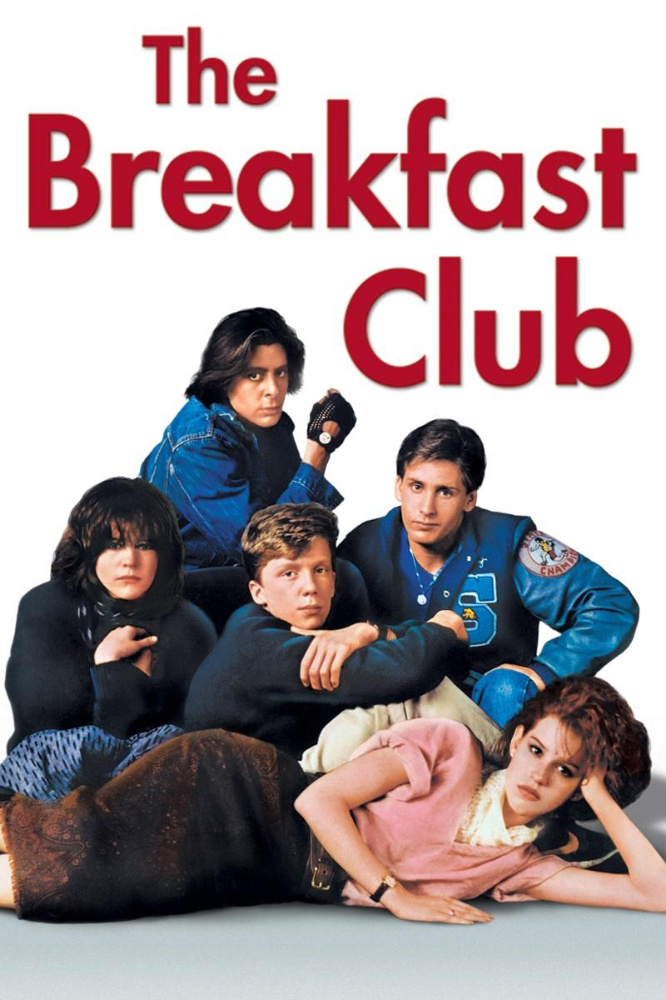

Trăim într-o eră în care tehnologia nu este plăcere, ci o necesitate. Suntem cei ce o creăm, alimentăm şi o dezvoltăm într-un ritm alert. Suntem o parte din tehnologie. Dar cum este tehnologia o parte din noi? Are tenhologia de azi un efect pozitiv asupra societăţii? Am ales să răspund la aceste întrebări prin intermediul lucrării prezente. Pagina creată prezintă documenţatie asupra stilului de viaţă a tinerilor de-al lungul ultimelor decenii, o ilustrare veridică asupra modului în care istoria şi tehnologia şi-au pus aprenta asupra aspiraţiilor şi preferinţelor adolescenţiilor.
Cum a evoluat cinematografia de-al lungul anilor?

1980
1990
2019
1970
2000
"In times of crisis, the wise build bridges while the foolish build barriers." - Black Panther"
"We're all pretty bizarre. Some of us are just better at hiding it, that's all." - The Breakfast Club
“The Force will be with you. Always.” - Star Wars

aliqua. Ut enim ad minim veniam, quis nostrud exercitation ullamco laboris nisi ut aliquip ex ea commodo consequat.
Acestia suntem noi este vocea generatiei trecute.